Зробити замовлення
Щоб замовити їжу, виконайте наведені нижче дії:
- На головній сторінці застосунку торкніть бульбашку Їжа.
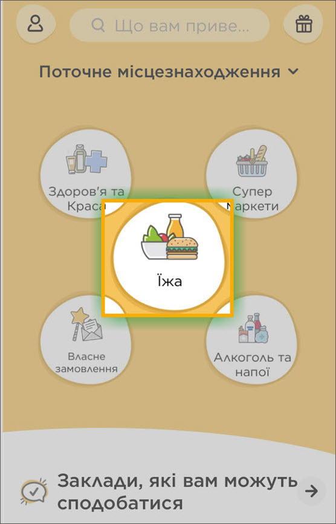
-
Ресторани можна відсортувати за близькістю розташування, рейтингом,
комісією за доставку. Для цього торкніть першу бульбашку у верхній
частині сторінки, а тоді торкніть Застосувати. Щоб відсортувати за
типом, торкніть інші бульбашки.
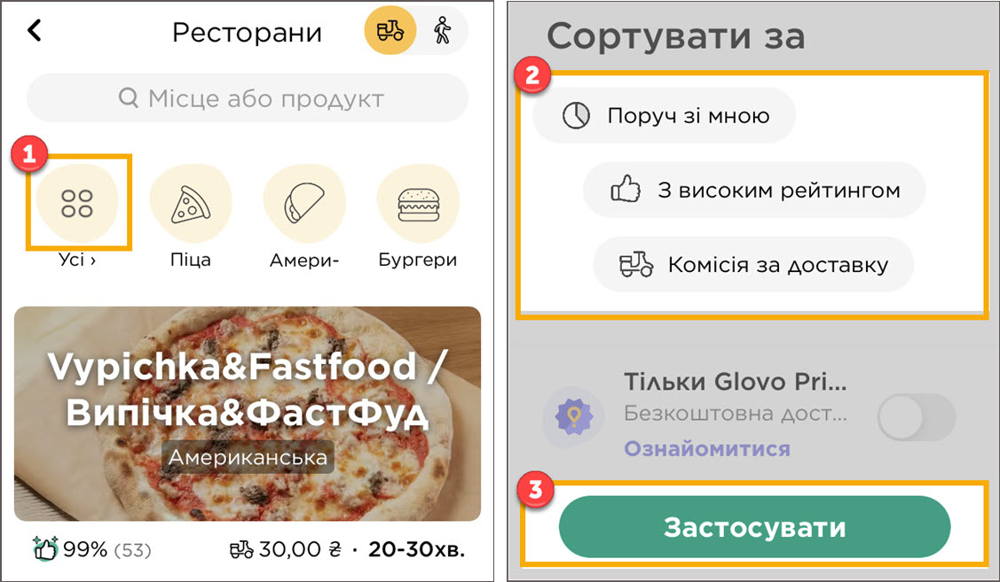
- Виберіть і торкніть ресторан з якого буде зроблено замовлення.
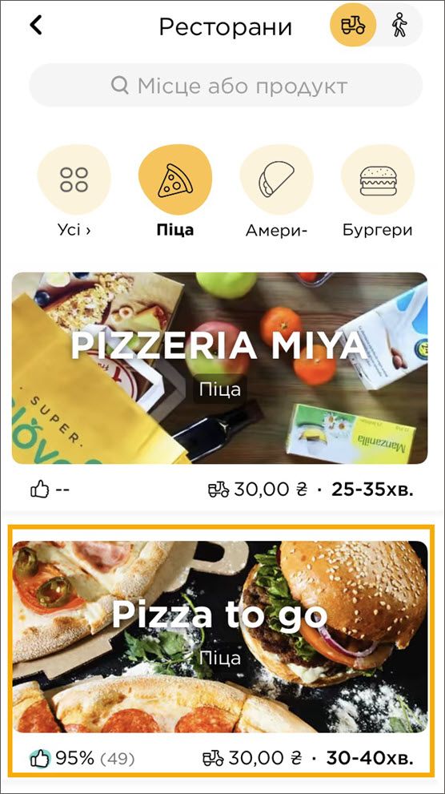
-
Виберіть і торкніть страву з меню. Якщо потрібно змінити кількість
порцій, торкніть знак ”плюс” або “мінус”. У нижній частині екрану
торкніть Додати.
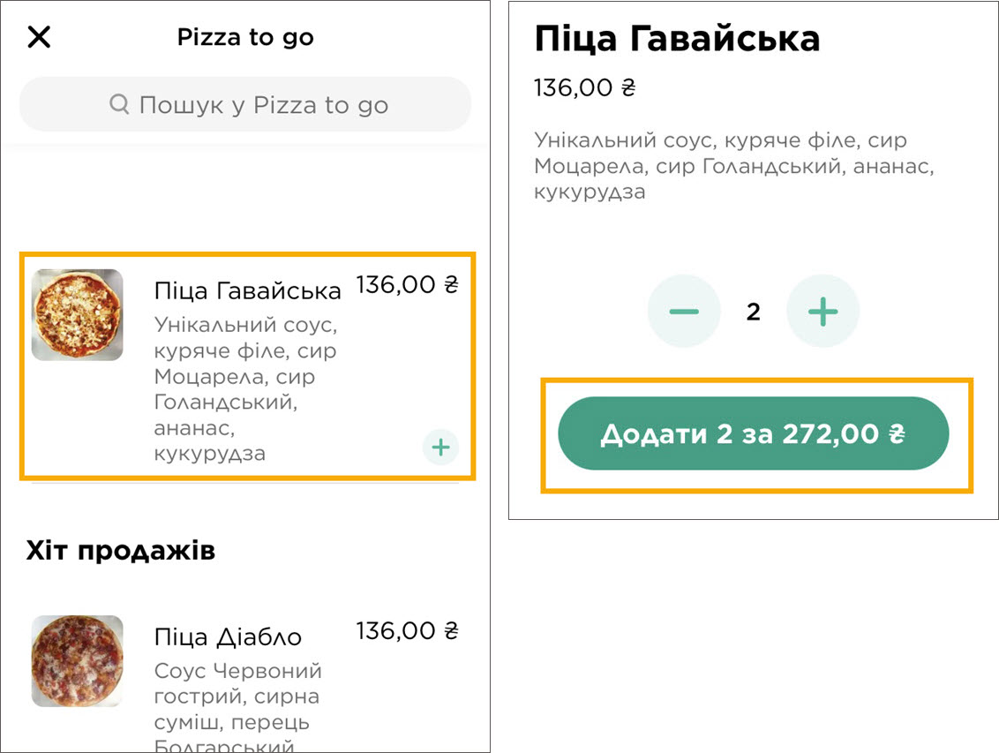
Порада.
-
Щоб знайти конкретну страву або заклад харчування, введіть назву в
поле пошуку в верхній частині екрану.
Примітка.
-
У деяких випадках до страви пропонується вибрати безкоштовний
обов’язковий додаток або платний за бажанням (наприклад,
упакування або соус), і тоді продовжити оформляти замовлення.
-
Ви можете додати інші продукти з меню або в нижній частині екрану
торкнути кнопку з сумою замовлення, щоб перейти до екрану оплати.
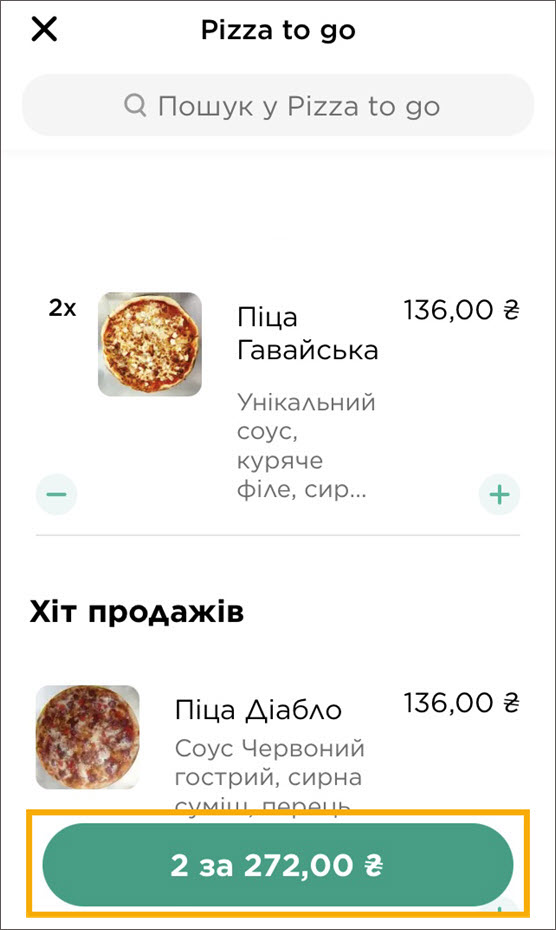
Порада.
-
Замовлення відображається також у нижній частині головного екрану
застосунку. Тому, якщо ви вийшли зі сторінки меню закладу, можете
продовжити оформляти замовлення з головного екрану.
- На екрані оплати:
-
Перевірте замовлення. Якщо хочете скасувати замовлення продукту,
торкніть знак “мінус” під ним.
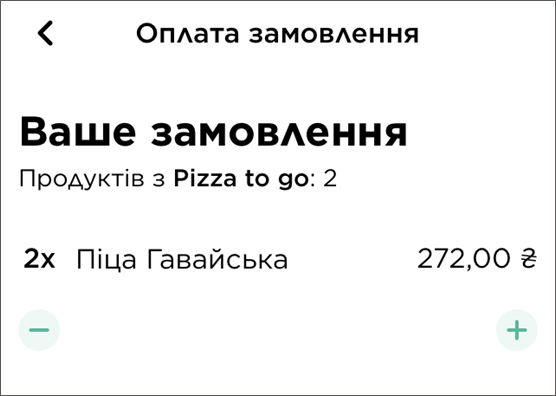
-
(Необов’язково) Якщо ви схильні до алергії, введіть цю інформацію у
відповідне поле і торкніть Зберегти.
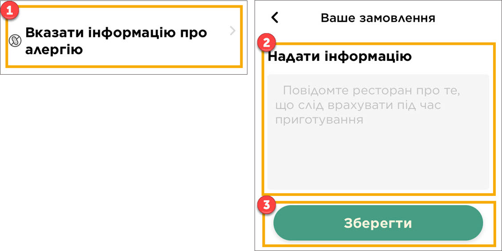
-
Якщо вам потрібні столові прибори, торкніть перемикач праворуч від
відповідного напису.
Примітка.
-
У деяких випадках можливість вказати інформацію про необхідність
столових приборів або схильність до алергії недоступна.
- Перевірте та при необхідності змініть дані про адресу доставки.
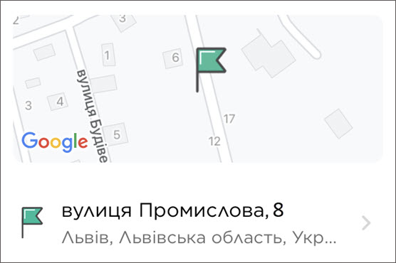
-
Введіть номер свого телефону та код підтвердження, який буде надіслано
в SMS-повідомленні. Отриманий код відображається у верхній частині
клавіатури, а також у програмі Повідомлення на одному з початкових
екранів iPhone. Торкніть Готово, щоб підтвердити номер телефону.
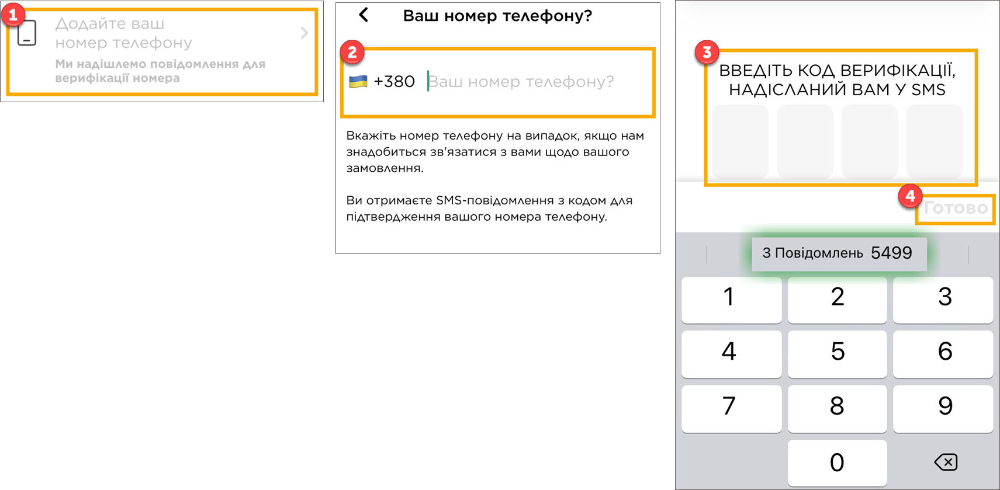
-
Щоб замовити доставку іншій особі, торкніть відповідний напис, введіть
дані отримувача, а тоді торкніть Зберегти.
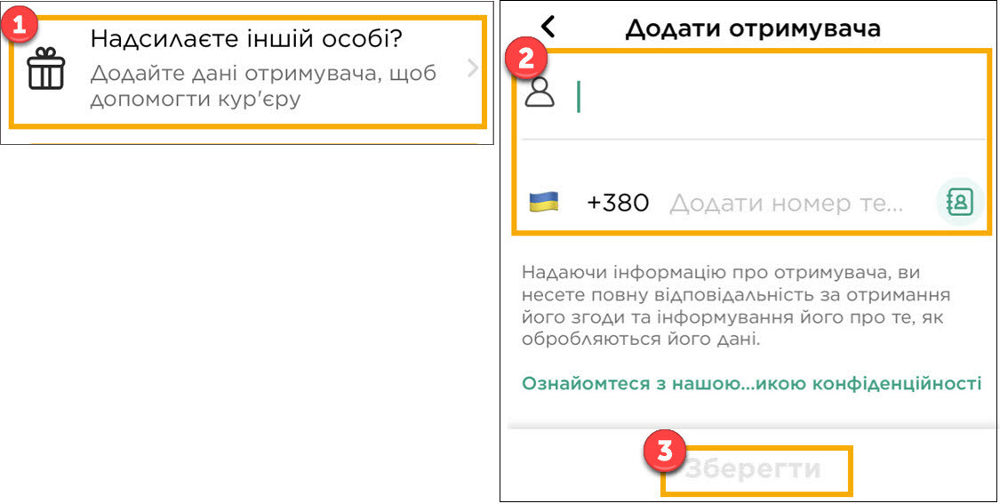
-
Виберіть час доставки, торкнувшись Запланувати або Якомога швидше.
Якщо ви запланували замовлення, встановіть дату і час за допомогою
колеса прокрутки, а тоді торкніть Вибрати час. Деталі запланованого
замовлення можуть бути змінені, а замовлення скасовано у будь-який
час.
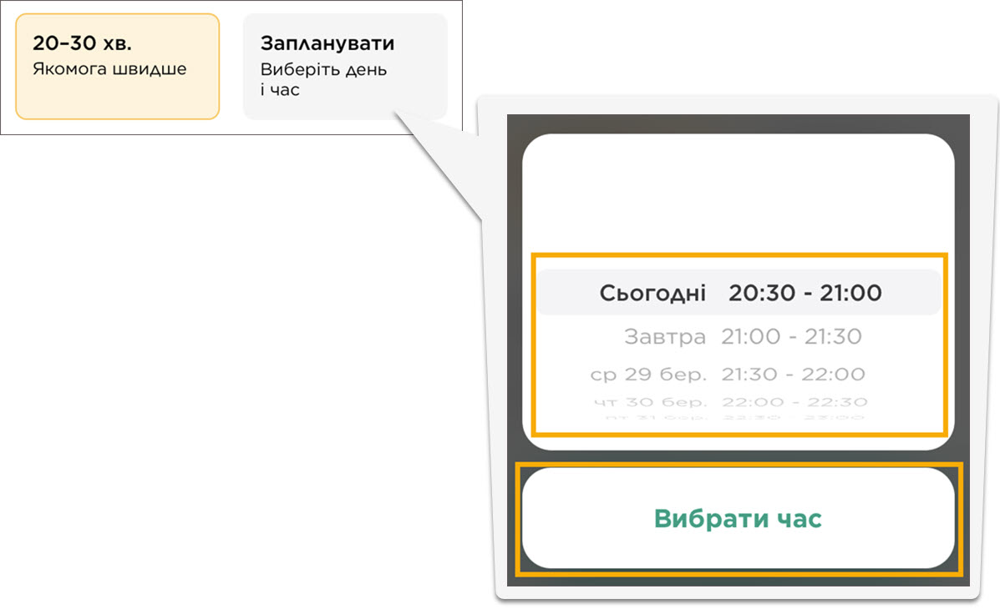
Примітка.
-
У деяких випадках можливість запланувати замовлення недоступна.
- Оберіть спосіб оплати.
-
Готівкою при отриманні: коли буде запропоновано, введіть суму
готівки заплановану для оплати, і торкніть Підтвердити.
-
Apple Pay: торкніть назву картки, введіть суму, ID або пароль. У
разі виникнення питань стосовно Apple Pay, зверніться за інформацією
до
Служби підтримки Apple.
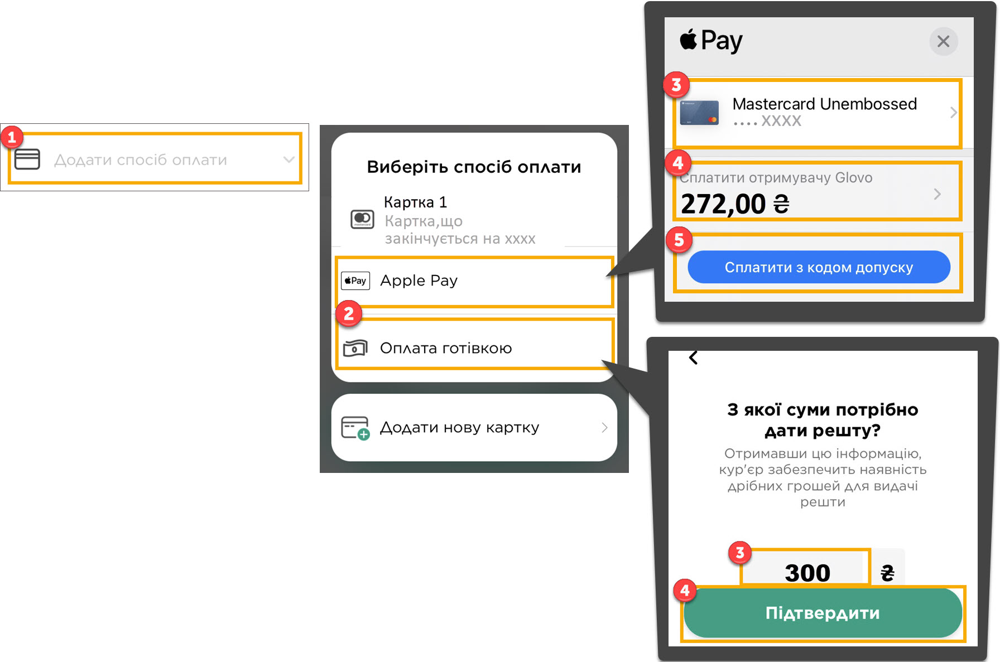
-
Якщо ви маєте промо-код, введіть його і торкніть Застосувати.
Детальніше про промо-коди можна дізнатись у
Частих запитаннях.
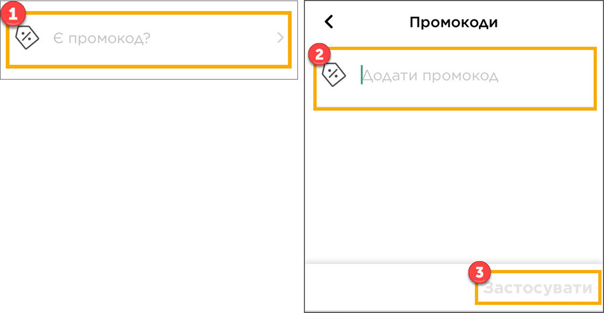
-
Щоб залишити чайові кур’єру, торкніть кнопку з відповідною сумою.
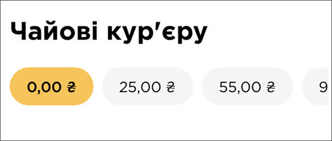
Примітка.
-
У деяких випадках можливість залишити чайові недоступна.
-
Торкніть Підтвердіть замовлення. Коли ваше замовлення буде прийнято,
ви отримаєте підтвердження на елетронну пошту.
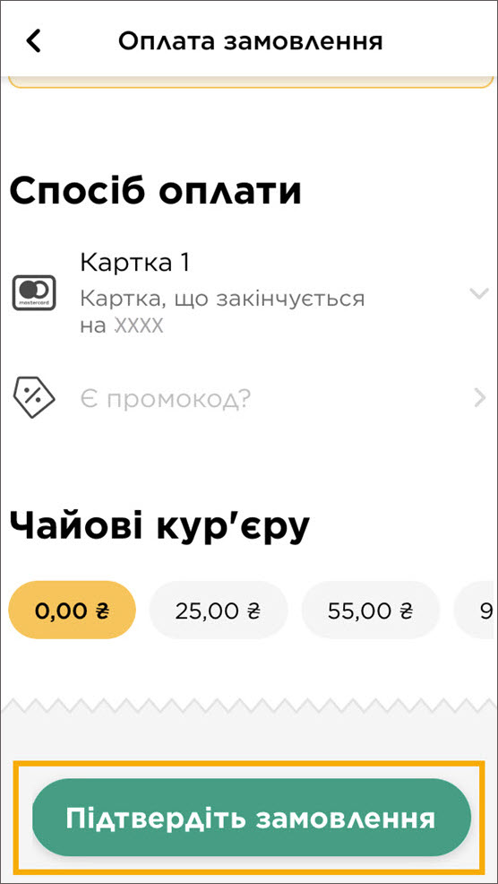